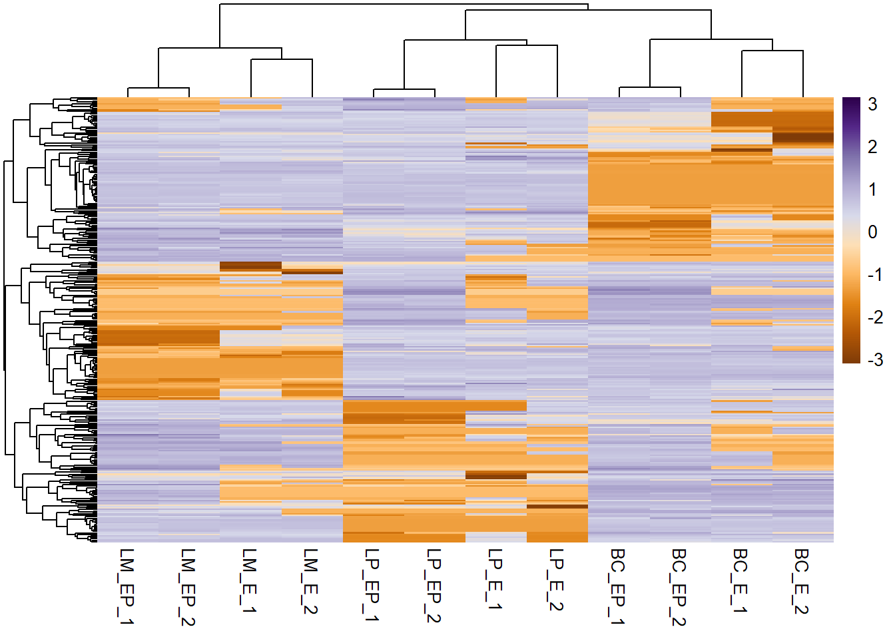

9 Heatmaps
Objective: To learn how to draw heatmaps in R using the pheatmap package
Summary: - Data preparation: - Numeric matrix/data frame as input - Log normalization - Making heatmaps (base R heatmap() function and pheatmap()) - Customization using arguments - Scaling - Clustering - Adding annotations (columns and rows)
This session is based upon this tutorial: datanovia.com/en/lessons/heatmap-in-r-static-and-interactive-visualization/
What is a heatmap? - plot to simultaneously visualize clusters of samples and features (i.e. hierarchical clustering) - blocks of high and low values are adjacent - “false colored image”, where data values are transformed to color scale
R Packages/functions for drawing heatmaps * heatmap() [R base function, stats package]: Draws a simple heatmap * heatmap.2() [gplots R package]: Draws an enhanced heatmap compared to the R base function. * pheatmap() [pheatmap R package]: Draws pretty heatmaps and provides more control to change the appearance of heatmaps. * d3heatmap() [d3heatmap R package]: Draws an interactive/clickable heatmap * Heatmap() [ComplexHeatmap R/Bioconductor package]: Draws, annotates and arranges complex heatmaps (very useful for genomic data analysis)
9.1 Data preparation
The proteomic data we’re using today is from Alison Casey’s 2018 JCB paper. We will look at the expression of 304 proteins.
Note: the column names are in the format “Celltype_HormoneTreatment_Replicate” where for celltype, BC = basal cell, LP = luminal progenitor, LM = luminal mature for hormone treatment, E = estrogen, EP = estrogen-progesterone
Read the tab-delimited text file.
# Read into data frame object using read.delim()
exp_df <- read.delim(file = "07-Casey-mamm-mouse-proteome-sample.txt", stringsAsFactors = F)
# See the dimensions (row x col)
dim(exp_df)## [1] 304 13# See the first 6 rows
head(exp_df)## mGeneSym BC_E_1 BC_E_2 BC_EP_1 BC_EP_2 LP_E_1 LP_E_2 LP_EP_1
## 1 Abcb10 0 0 0 0 1557708 1013752 4221663
## 2 Abcg2 0 0 2163991 1048502 12987493 7697484 6474732
## 3 Abhd4 4956153 5124382 13346955 10634977 0 0 0
## 4 Abhd5 0 0 0 0 1255272 4329562 5741534
## 5 Acox1 8926818 9756252 7242814 6847158 4069287 6442152 19309447
## 6 Ada 12920739 9339090 3126248 8926815 45120667 77396731 80759779
## LP_EP_2 LM_E_1 LM_E_2 LM_EP_1 LM_EP_2
## 1 5882079 1235621 802389.8 2127015 3010426
## 2 13136088 0 5888476.7 0 0
## 3 0 5872301 8928660.8 2478597 6995790
## 4 2653241 14846810 39848291.1 8631368 6878478
## 5 11300060 5050705 6733985.2 0 0
## 6 87393916 65529106 69778380.1 162933067 211765680Numeric Matrices
Most heat map function require that the data be in the form of a numeric matrix, where the rows and columns are genes and samples.
Recall: matrices are data tables, where all columns and rows have the same data type.
Note: data frames are ok for pheatmap(), as long as all the columns are numeric (right now, our data is not all numeric).
# Check if an object is a matrix
is.matrix(exp_df)## [1] FALSE# Rename rows with feature (ie. gene name) and remove the feature column
rownames(exp_df) <- exp_df$mGeneSym
exp_df$mGeneSym <- NULL # equivalent code: exp_df <- exp_df[,-1]
# Convert a data frame to a data matrix
exp_mat <- as.matrix(exp_df)
head(exp_mat)## BC_E_1 BC_E_2 BC_EP_1 BC_EP_2 LP_E_1 LP_E_2 LP_EP_1 LP_EP_2
## Abcb10 0 0 0 0 1557708 1013752 4221663 5882079
## Abcg2 0 0 2163991 1048502 12987493 7697484 6474732 13136088
## Abhd4 4956153 5124382 13346955 10634977 0 0 0 0
## Abhd5 0 0 0 0 1255272 4329562 5741534 2653241
## Acox1 8926818 9756252 7242814 6847158 4069287 6442152 19309447 11300060
## Ada 12920739 9339090 3126248 8926815 45120667 77396731 80759779 87393916
## LM_E_1 LM_E_2 LM_EP_1 LM_EP_2
## Abcb10 1235621 802389.8 2127015 3010426
## Abcg2 0 5888476.7 0 0
## Abhd4 5872301 8928660.8 2478597 6995790
## Abhd5 14846810 39848291.1 8631368 6878478
## Acox1 5050705 6733985.2 0 0
## Ada 65529106 69778380.1 162933067 211765680Log normalization
Usually, expression data has large ranges of values. This will be scaled in the heatmap but we may lose sight of small differences. And so, we log our data.
We must deal with the zeros before log(0) is negative infinity (can’t plot -Inf).
# Check if there are any zeros in the data
any(exp_mat == 0)## [1] TRUE# Impute 0 with 1
exp_mat[exp_mat == 0] <- 1
# Log2-transform data
exp_mat <- log2(exp_mat)
# Alternatively, log2(exp_mat + 1) adds 1 to all values before log transformationNow let’s make our heatmaps..
R base heatmap: heatmap()
The built-in R heatmap() function [in stats package] can be used.
heatmap(x = exp_mat) # x is a numeric matrix, high values are in red and low values are in yellow
9.2 pheatmap()
Use the pheatmap (“pretty” heat map package) for more customizations.
# Install and load package
# install.packages("pheatmap")
library(pheatmap)
# Make a simple heatmap using pheatmap() function call
pheatmap(exp_mat) # input: numeric matrix
9.2.1 Modify row and column names
pheatmap allows you to specify font size, change the row/column names, remove the names, and much more.
pheatmap(exp_mat,
show_rownames = F, # hide row names
fontsize_col = 2, # fontsize of column labels (sample names)
cellwidth = 3) # width of columns
9.3 Scaling
Usually, we scale by our features (genes) to normalize gene expression across different samples. - argument built in to heatmap function call - a character indicating if the values should be centered and scaled in the “row” direction, “column” direction, or “none”
pheatmap(exp_mat, show_rownames = F,
scale = "row") #default scale
You can scale the expression matrix before plotting the heatmap as well.
- compute z-scores - Z-score normalization is a strategy of normalizing data that avoids outlier issue by considering mean and standard deviation Read more: https://www.codecademy.com/articles/normalization
# Compute z-scores to plot on heat map
# apply() performs a computation/function over rows (1) or columns (2) in a dataframe or matrix
z_exp_mat <- apply(exp_mat, 1, function(x) (x - mean(x)) / sd(x))
# Transpose matrix, since apply() rotates data frame
z_exp_mat <- t(z_exp_mat)
# This is your input data matrix
pheatmap(z_exp_mat, show_rownames = F, scale = "row") 
- rescale to specified min/max using rescale() from the scales package e.g. make range of {-3.2 to 4} to {-2 to 2})
# install.packages("scales")
library(scales)
# Look at range (minimum and maximum)
range(exp_mat)## [1] 0.00000 34.53543# -- rescale whole matrix
# Rescale whole matrix - this just looks like the first heatmap we made
exp_mat2 <- rescale(x = exp_mat, # numeric matrix
to = c(-2, 2)) # new range
# In your heatmap function call, specify the scale = "none" to preserve the range
pheatmap(exp_mat2, show_rownames = F, scale = "none")
# -- rescale each row seperately
# Rescale each row seperately
exp_mat2 <- apply(exp_mat, 1, function(x) rescale(x, c(-2, 2)))
# Transpose when using the apply function
exp_mat2 <- t(exp_mat2)
# Plot heatmap - remember to transpose when
pheatmap(exp_mat2, show_rownames = F, scale = "none")
# Look at new range (minimum and maximum)
range(exp_mat2)## [1] -2 29.4 Heatmap Colours
- It’s possible to specify a color palette using the argument col, which can be defined as follow:
- use colorRampPalette() to make a palette and “multiply” by a number to create a gradient
# Using custom colors:
col_palette <- colorRampPalette(c("red", "white", "blue")) (256) # 256 is the number of colours this function will create
scales::show_col(col_palette) #show colour palette
# Using RColorBrewer color palette:
library("RColorBrewer")
RColorBrewer::display.brewer.all()
col_palette <- colorRampPalette(brewer.pal(10, "PuOr")) (256) #pick a palette and multiply by 256 using ()
# Show on heatmap
pheatmap(exp_mat, show_rownames = F, scale = "row",
col = col_palette) # specify colour palette
9.5 Clustering methods
- clustering refers to visualizing groups of similar values together via a dendogram (tree-like object) and is always unsupervised in heatmaps
- rows and columns are clustered independent of one another
Set “cluster_cols” and “cluster_rows” to FALSE to prevent clustering. Default is TRUE (via euclidean distance and complete linkage).
pheatmap(exp_mat, show_rownames = F, scale = "row", col = col_palette,
cluster_cols = F, # specify column clustering
cluster_rows = F # specify row clustering
)
Most heatmap packages have a clustering method argument in the function call.
pheatmap(exp_mat, show_rownames = F, scale = "row", col = col_palette,
clustering_method = "complete") # specify clustering method - select one of: ward.D", "ward.D2", "single", "complete", "average" (= UPGMA), "mcquitty" (= WPGMA), "median" (= WPGMC) or "centroid" (= UPGMC)
# Note: you can hide dendograms by setting arguments treeheight_row and/or treeheight_col to 0You can also make hierarchical cluster (hc) objects (i.e dendogram-like structures) 1. First make a distance matrix object using dist()
# Make distance matrices for columns (sample)
dist_cols <- dist(t(exp_mat), method = "manhattan") #default - select one of: one of "euclidean", "maximum", "manhattan", "canberra", "binary" or "minkowski"
# Make distance matrices for rows (genes)
dist_rows <- dist(exp_mat, method = "euclidean")
# Note: Can also make a correlation matrix into a distance matrix by subtracting values from 1
dist_cols <- as.dist(1 - cor(exp_mat, method = "pearson"))
dist_rows <- as.dist(1 - cor(t(exp_mat), method = "pearson"))- Then build hierachal clustering objects using hclust()
# Make hclust object for columns
hc_cols <- hclust(dist_cols, method = "complete")
plot(hc_cols)
# Repeat for rows
hc_rows <- hclust(dist_rows, method = "complete")- Pass these objects into your heatmap function call
pheatmap(exp_mat, show_rownames = F, scale = "row", col = col_palette,
cluster_cols = hc_cols, # specify column clustering
cluster_rows = hc_rows # specify row clustering
)
9.6 Create annotations
Annotations are important components of a heatmap that it shows additional information that associates with rows or columns in the heatmap.
Annotations in pheatmap are in the form of data frames.
Annotation column (sample information)
# Get column names
colnames(exp_mat)## [1] "BC_E_1" "BC_E_2" "BC_EP_1" "BC_EP_2" "LP_E_1" "LP_E_2" "LP_EP_1"
## [8] "LP_EP_2" "LM_E_1" "LM_E_2" "LM_EP_1" "LM_EP_2"# Make annotation column
ann_col <- data.frame(CellType = c("BC", "BC", "BC", "BC", "LP", "LP", "LP", "LP", "LM", "LM", "LM", "LM"),
Hormone = c("E", "E", "EP", "EP", "E", "E", "EP", "EP", "E", "E", "EP", "EP"))
# Rename row names of annotation column dataframe as the column names of matrix (must match)
rownames(ann_col) <- colnames(exp_mat)Note: instead of passing in that huge vector for cell type, these lines of code do exactly the same thing
# for cell type
rep(c("BC", "LP", "LM"), each = 4)## [1] "BC" "BC" "BC" "BC" "LP" "LP" "LP" "LP" "LM" "LM" "LM" "LM"gsub("_.*", "", colnames(exp_mat))## [1] "BC" "BC" "BC" "BC" "LP" "LP" "LP" "LP" "LM" "LM" "LM" "LM"# for hormone treatement
rep(c("E", "EP"), each = 2, times = 3)## [1] "E" "E" "EP" "EP" "E" "E" "EP" "EP" "E" "E" "EP" "EP"- Annotation rows (gene information) If you have to provide annotation for features, make a data frame (just like annotation column) and rename rows as genes (same order as your matrix)
ann_row <- NA- Plot heatmap
pheatmap(exp_mat, scale = "row", show_rownames = F, col = col_palette,
annotation_col = ann_col, # annotation column (sample info)
annotation_row = ann_row # annotation rows (gene info)
)
Make colours for your annotations - Make a list object of the annotation colors - List elements have the same names as the columns of the annotation data frames - Vector elements have same names as values
# Make annotation colours list
ann_colors <- list(
CellType = c(BC="red", LP="blue", LM="darkgreen"),
Hormone = c(E = "black", EP = "purple")
)
# Plot heatmap
pheatmap(exp_mat, scale = "row", show_rownames = F, col = col_palette,
annotation_col = ann_col, # annotation column (sample info)
annotation_row = ann_row, # annotation rows (gene info)
annotation_colors = ann_colors # annotation colours
)
Save pheatmap to file - Add title using main = - Save to file using filename = (Currently following formats are supported: png, pdf, tiff, bmp, jpeg)
# Plot heatmap and save to file
pheatmap(exp_mat, scale = "row", show_rownames = F, col = col_palette, annotation_col = ann_col, annotation_colors = ann_colors,
main = "My heatmap",# add a title
filename = "my_heatmap.png") # save as png to current working directory9.7 Practice
Motor trend car road tests (mtcars) Fuel consumption and 10 additional aspects (variables) of automobile design tested in 1974 are given in an in-built R dataset called “mtcars”. a) Look at the first rows of the data frame (using head()) b) Look at the structure, are all the data numeric? (use str()) c) Convert the data frame to a data matrix into a new variable. d) Add 1 to all values and apply log2 transformation. e) Make a heatmap (using the pheatmap package). i) Scale by column, ii) use clustering method “ward.D”, iii) set cell width to 10, iv) pick 9 colours from RColorBrewer color palette “RdPu” and make a palette with 250 colors for the heatmap, and v) set the title to “my heatmap” vi) save to a jpeg file called “mtcars_heatmap”
Solution
# a) Use head()
head(mtcars)## mpg cyl disp hp drat wt qsec vs am gear carb
## Mazda RX4 21.0 6 160 110 3.90 2.620 16.46 0 1 4 4
## Mazda RX4 Wag 21.0 6 160 110 3.90 2.875 17.02 0 1 4 4
## Datsun 710 22.8 4 108 93 3.85 2.320 18.61 1 1 4 1
## Hornet 4 Drive 21.4 6 258 110 3.08 3.215 19.44 1 0 3 1
## Hornet Sportabout 18.7 8 360 175 3.15 3.440 17.02 0 0 3 2
## Valiant 18.1 6 225 105 2.76 3.460 20.22 1 0 3 1# b) Use str() to see the structure
str(mtcars) # ANSWER: Yes, all variables are numeric## 'data.frame': 32 obs. of 11 variables:
## $ mpg : num 21 21 22.8 21.4 18.7 18.1 14.3 24.4 22.8 19.2 ...
## $ cyl : num 6 6 4 6 8 6 8 4 4 6 ...
## $ disp: num 160 160 108 258 360 ...
## $ hp : num 110 110 93 110 175 105 245 62 95 123 ...
## $ drat: num 3.9 3.9 3.85 3.08 3.15 2.76 3.21 3.69 3.92 3.92 ...
## $ wt : num 2.62 2.88 2.32 3.21 3.44 ...
## $ qsec: num 16.5 17 18.6 19.4 17 ...
## $ vs : num 0 0 1 1 0 1 0 1 1 1 ...
## $ am : num 1 1 1 0 0 0 0 0 0 0 ...
## $ gear: num 4 4 4 3 3 3 3 4 4 4 ...
## $ carb: num 4 4 1 1 2 1 4 2 2 4 ...# c) convert to matrix using as.matrix
mtcars_mat <- as.matrix(mtcars)
# d) add 1 and log2
mtcars_mat <- mtcars_mat + 1
mtcars_mat <- log2(mtcars_mat)
# equivalent: mtcars_mat <- log2(mtcars_mat + 1)
# e) plot heatmap
library(pheatmap)
library(RColorBrewer)
pheatmap(mtcars_mat, #e
scale = "column", #i
clustering_method = "ward.D", #ii
cellwidth = 10, #iii
col = colorRampPalette(brewer.pal(9, "RdPu")) (256), #iv
main = "my_heatmap", #v
filename = "mtcars_heatmap.jpeg" #vi
)